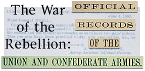

Confederate General Richard Ewell reports on the part his men played in the June-July, 1863, Gettysburg campaign. Ewell discusses fighting in the Shenandoah Valley prior to crossing the Potomac, the invasion of Pennsylvania, including entering Chambersburg, the battle of Gettysburg, and the retreat to Virginia. Ewell mentions sending prisoners to Staunton after the battle.
W. L. Jackson reports to Confederate General Jubal Early, commanding in Staunton, on December, 1863, action in western Virginia.
Union General Robert Schenck updates General in Chief Henry Halleck on January, 1863, action in the Shenandoah Valley. The movement of Confederate troops from Staunton is mentioned in the dispatch.
Union General in Chief Henry Halleck writes Army of the Potomac Commander Ambrose Burnside on January, 1863, operations in western Virginia. He repeats a report of General Benjamin Kelley that a Confederate force might be moving from Staunton to West Virginia.
Union General Robert Milroy writes General Benjamin Kelley on January, 1863, efforts to defend Winchester and the northern Shenandoah Valley. Milroy mentions the possibility of raids and attacks toward Staunton.
Confederate Secretary of War James Seddon writes John Baldwin at Staunton in January, 1863, concerning the death of a prisoner in Richmond.
Army of the Potomac commander Ambrose E. Burnside replies to General in Chief Henry Halleck on a reported January, 1863, Confederate advance on Winchester from Staunton, VA.
Union General Robert Schenck forwards to General in Chief Henry Halleck a January, 1863, telegram from Robert Milroy. It discusses a Confederate advance on Winchester from Staunton.
Union General Robert Milroy writes General Robert Schenck in January, 1863, to warn him of a Confederate attack on Winchester from Staunton.
General in Chief Henry Halleck replies to Robert Schenck concerning a reported January, 1863, Confederate advance on Winchester from Staunton. Halleck reports Ambrose Burnside's opinion that the Confederate advance is only a false alarm.
Union General William Chesebrough writes General Benjamin Kelley on January, 1863, actions in the Shenandoah Valley. He states the opinion that D. H. Hill's Confederates are not in the Valley, and there are few troops in Staunton.
Brig. Gen. Jubal A. Early commanded the Third Division of the Army of Northern Virginia which includes the 52nd Va. Inf. Early reports on the defense of the railroad, an engagement with the enemy, and contact with enemy skirmishers.
Brig. Gen. Jubal A. Early commanded the division of the Army of the Potomac which included the 52nd Va. Inf. Early details a particularly bloody fight, and his unit's departure from the battlefield.
Brig. Gen. Jubal A. Early commanded the division of the Army of the Potomac which included the Staunton Artillery. Early details a particularly bloody fight, and his unit's departure from the battlefield.
Wheat from the Shenendoah Valley played a vital role in feeding the Confederate armies. In this dispatch, Lee suggests collecting wagons from Staunton and other Valley towns to facilitate the flow of foodstuffs from the Valley to Richmond.
Brig. Gen. John R. Jones commanded Jackson's Division of the Army of Northern Virginia which included the 5th Va. Inf. Jones reports that the regiment drove the enemy from it's position and captured many prisoners.
Brig. Gen. John R. Jones commanded Jackson's Division of the Army of Northern Virginia, which included the 5th Va. Inf. Jones reports that the division engaged the enemy in a bloody fight and drove him back.
Robert E. Lee writes Colonel H. B. Davidson at Staunton on January, 1863, movements of the Union army. Lee orders Davidson and Imboden, also at Staunton, to be ready to move to meet the enemy at a moment's notice.
In January, 1863, the Army of the Potomac again went in motion toward the Rappahannock River line. Robert E. Lee reports to Jefferson Davis on these developments. He suggests moving some troops from Staunton to meet the threat.
In this January, 1863, letter, Robert E. Lee writes cavalry general William E. Jones requesting that a cavalry legion be relieved from duty at Staunton and sent to the front.
Confederate Assistant Secretary of War J. A. Campbell writes General John Winder in January, 1863, concerning the handling of prisoners, two of which are to be paroled at Staunton.
Lieut. Gen. Thomas J. Jackson commanded the Second Army Corps of the Army of Northern Virginia, which included the Staunton Artillery. Jackson notes the specific positions of the guns.
Robert E. Lee writes to Secretary of War James Seddon in February, 1863, with news of a report made by cavalry commander W. E. Jones. Lee discusses Jones' reports on the availability of cattle in the Valley. Lee also mentions that surplus bacon is being sent to Staunton.
Union General Robert Milroy writes Robert Schenck in February, 1863. He proposes moving through Staunton to attempt to capture and destroy Confederate General John Imboden's raiders. Milroy also discusses various aspects of irregular warfare in the Valley, and his desire to deal harshly with guerrillas.
Union special agent Michael Graham reports to General in Chief Henry Halleck on February, 1863, Confederate movements and strengths in the Shenandoah Valley. Graham details the number of troops stationed at Staunton. He warns Halleck of a suspected Confederate spy, one Mrs. Kenedy from Staunton. Graham also discusses the actions of speculators, many of whom, he claims, are Jewish. According to Graham, the speculators move through Staunton and other Valley towns to sell goods for which Graham lists going prices. He also reports that speculators buy up Treasury notes to exchange for gold in Baltimore. In addition, Graham gives his impression of prevailing sentiment among soldiers and civilians concerning politics and the war.
Union General Robert Milroy writes General Robert Schenck in February, 1863, on a variety of subjects. He reports on a mother and daughter returning to Herkimer, NY, from La Grange, GA, by way of Staunton, VA, and the information they can supply on social conditions in the Confederacy. Milroy complains about prices on the Baltimore and Ohio Railroad, and the lack of paymasters for his command. Milroy also discusses wheat prices in the Valley.
Union General August Moor reports on a February, 1863, expedition to Pocahontas County to capture supplies and Confederate recruiting parties. He mentions a plan by Confederate General John Imboden to invade Union counties with regiments from Staunton, VA.
In June, 1862, Confederate General Thomas J. Jackson and his troops left the Shenandoah Valley to join the fighting in front of Richmond. In this February, 1863, dispatch, Jackson reports on his June, 1862, departure from Staunton, and the subsequent role his command played in the Seven Days Battles before Richmond.
Union scout A. Yager reports to Army of the Potomac commander Joseph Hooker in February, 1863. Yager reports Thomas J. Jackson's army at Staunton, preparing for a raid into Maryland.
This February, 1863, Union letter reports that Jackson's army is stationed at Staunton and planning a raid into Maryland.
Confederate General Samuel Jones writes General John Imboden at Staunton concerning a proposed spring, 1863, cavalry expedition into western Virginia.
In this March, 1863, letter, Union General Robert Milroy writes General Robert Schenck concerning the importance of repairing the railroad from Harper's Ferry to Winchester. Milroy states that doing so will make the capture of the Valley as far as Staunton easier. He also discusses the strategic importance of the Shenandoah Valley in general, and the desirability of encouraging latent unionist sentiment in the area.
In late May, 1862, Confederate forces defeated Union troops under Nathaniel Banks at Front Royal. The Confederate troops captured a large number of supplies during the battle. Confederate Chief Quartermaster John Harman reports to General Thomas J. Jackson on what was captured, and efforts to transport it to the rear. He mentions rounding up all available trains and transportation from Staunton for these purposes.
Union General John Dix makes a March, 1863, report to General in Chief Henry Halleck. He informs the general of Confederate troop strengths gathered by a spy in several locations, including Staunton.
Confederate General Samuel Jones writes John Imboden, commanding at Staunton, regarding a March, 1863, cavalry raid on the Baltimore and Ohio Railroad along with an attempt to destroy the Cheat River Bridge.
In March, 1863, Confederate General John Imboden planned an expedition to destroy the Cheat River bridge. In this letter, Confederate General Samuel Jones writes Imboden, commanding at Staunton, concerning preparations for the expedition. Jones promises to send engineers to Staunton to aid Imboden's plans.
In March, 1863, Confederate general John Imboden planned a raid to destroy the Cheat River Bridge. In this letter, Confederate General Samuel Jones writes General William E. Jones concerning plans for the operation. Samuel Jones mentions sending engineers to report at Staunton to participate in the raid.
Confederate General Samuel Jones writes General John Imboden, commanding at Staunton, concerning Imboden's plans for a spring, 1863, raid into western Virginia to destroy the Cheat River bridge. Jones reports sending a group of engineers to report to Imboden at Staunton.
This March, 1863, Confederate Quartermaster General's Office Circular establishes a supply depot at Staunton, VA, and sets guidelines for purchasing officers.
This Confederate Quartermaster General's circular, issued in March, 1863, establishes guidelines for the purchase of army supplies. The order establishes a supply depot at Staunton.
General Robert E. Lee writes General John Imboden on a planned spring, 1863, expedition into West Virginia. Lee promises to send ammunition and supplies to Staunton for Imboden's use.
Confederate General Samuel Jones writes General John Imboden, commanding at Staunton, concerning preparations for a proposed spring, 1863, expedition into West Virginia.
Confederate General Samuel Jones writes General John Imboden, commanding at Staunton, regarding Imboden's plans for an April, 1863, raid into West Virginia. Jones reports sending an engineer to Staunton to assist Imboden's planned attempt to destroy the Cheat River bridge.
Confederate General Samuel Jones writes Colonel W. L. Jackson concerning plans for John Imboden's April, 1863, raid into West Virginia. Jones instructs Jackson to find transportation for his men at Staunton.
Confederate Assistant Adjutant Charles Stringfellow writes John Imboden at Staunton concerning preparations for his April, 1863, raid into West Virginia.
On May 8, 1862, Confederate forces under Thomas J. Jackson met and defeated fragments of John C. Fremont's Union troops under Robert Milroy at the battle of McDowell. Jackson acted to prevent Milroy from linking up with Banks and capturing Staunton, a town which Jackson describes as important. In this letter, Jackson reports on the battle. He also mentions VMI cadets stationed in Staunton.
April, 1863, Confederate General Orders issued by Lee's Assistant Adjutant Walter Taylor. The orders direct two regiments to report to General John Imboden at Staunton for use in his raid into West Virginia.
Union Cavalry commander Alfred Pleasonton forwards Assistant Secretary of War P. H. Watson an April, 1863, scouting report. Among other things, it reports that Confederate blockade runners ship merchandise to Staunton by way of the Valley and the Baltimore and Ohio Railroad.
Confederate General Samuel Jones writes Robert E. Lee in April, 1863, regarding movements of troops to Staunton in preparation for General John Imboden's raid into West Virginia.
Confederate General Samuel Jones writes Colonel W. L. Jackson via Staunton concerning preparations for John Imboden's April, 1863, raid into West Virginia.
Confederate General William E. Jones sends a letter via Staunton to General Samuel Jones. The letter countermands troop movements, and makes plans to meet Union cavalry in the Valley.
Robert E. Lee writes General Samuel Jones regarding the movement of troops to Staunton to participate in General John Imboden's April, 1863, raid into West Virginia.
Confederate Cavalry Commander William E. Jones writes General John D. Imboden concerning a possible April, 1863, Union attack on the Valley. Jones orders that the area around Staunton serve as a rendezvous point in case of trouble.
Confederate General Samuel Jones writes John Imboden via Staunton regarding April, 1863, troop assignments.
Union General Robert Schenck reports to General in Chief Henry Halleck on April, 1863, events in the Shenandoah Valley. Schenck expresses his belief that Confederate forces might advance into West Virginia, and reports the arrival of Jackson's army's baggage in Staunton.
Confederate General Samuel Jones writes Commissary General Lucius B. Northrop to ask that rations be readied in Staunton should an emergency retreat be required by John Imboden's force engaged in an April, 1863, raid into western Virginia.
Lieut. Gen. Thomas J. Jackson commanded the Army Corps of the Army of Northern Virginia which included the 5th Va. Inf. Jackson reports that the Confederates prevented further Union advances.
Lieut. Gen. Thomas J. Jackson commanded the Army Corps of the Army of Northern Virginia which included the 52nd Va. Inf. Jackson reports that the Confederates prevented further Union advances.
Lieut. Gen. Thomas J. Jackson commanded the Army Corps of the Army of Northern Virginia which included the Staunton Artillery. Jackson reports that the Confederates prevented further Union advances.
Union General Robert Milroy forwards the April, 1863, statement of a Confederate prisoner to Robert Schenck. In the statement, the Confederate cavalryman gives the locations and strengths of various Confederate forces. He reports A. P. Hill's division moving to the Valley through Staunton.
Union General Dan Butterfield forwards an April, 1863, report of a Union informant to General Samuel Heintzelman. The informant came to Union lines after having been in Staunton. He reports on the strength and locations of various Confederate forces.
Union General Robert Schenck writes Robert Milroy in April, 1863, concerning movements in western Virginia. Schenck guesses that Confederate forces may be stationed at Staunton.
Lieut. Gen. Thomas J. Jackson commanded the Second Corps of the Army of Northern Virginia which includes the 5th Va. Inf. Jackson provides the details of the battle, including the repeated repulses of enemy assaults.
Lieut. Gen. Thomas J. Jackson commanded the Second Corps of the Army of Northern Virginia which includes the 52nd Va. Inf. Jackson provides the details of the battle, including the repeated repulses of enemy assaults.
In late April, 1863, the Union Army of the Potomac under Joseph Hooker crossed the Rappahannock River prior to the battle of Chancellorsville. In this dispatch, Confederate Adjutant General Samuel Cooper orders General Samuel Jones to send cavalry forces in western Virginia through Staunton to Lee's aid.
Confederate Adjutant General Samuel Cooper orders the commanding officer at Staunton, VA, to send all available troops to Gordonsville to meet Union General Joseph Hooker's advance prior to the battle of Chancellorsville.
In late April, 1863, Confederate forces moved to meet an advance by Union General Joseph Hooker's Army of the Potomac. In this letter, Confederate General Samuel Jones orders cavalry General Albert Jenkins to send all available men and horses through Staunton to join Jeb Stuart on the Rapidan River.
Union General Dan Butterfield forwards a May, 1863, scouting report to Army of the Potomac commander Joseph Hooker. The report estimates the number of Confederates stationed under John Imboden at Staunton.
West Virginia Governor Francis Pierpont writes Secretary of War Stanton in May, 1863, to request arms for the militia. He suggests that taking Staunton, VA, would interrupt the flow into the Confederacy of "booty" seized in West Virginia.
Confederate Assistant Adjutant General William B. Myers orders Cavalry Colonel M. J. Ferguson to move his men to Staunton, VA, in May, 1863.
Robert E. Lee orders General Samuel Jones to send Albert Jenkin's cavalry to Staunton in May, 1863.
In this May, 1863, dispatch, Confederate General Samuel Jones informs Robert E. Lee that General Jenkins cavalry went to join Stuart. Jones reports that he will send all of Jenkin's cavalry he can to Staunton, in accord with Lee's orders.
Union General Robert Milroy writes Robert Schenck on May, 1863, action in the Valley. He discusses the number of troops in the Valley, the lack of Confederate resistance as far as Staunton, and equipment abandoned by Confederate General Jones.
Robert E. Lee writes J. E. B. Stuart on cavalry operations following the battle of Chancellorsville. Lee informs Stuart of his orders to Albert Jenkins to go to Staunton.
Union General B. S. Roberts writes W. H. Chesebrough to inform him of May, 1863, action in the Valley. Roberts reports on a retreat by Jackson's men toward Staunton. He suggests sending troops to Staunton to trap Jackson.
Confederate General Samuel Jones reports to Robert E. Lee on May, 1863, cavalry movements in the Shenandoah Valley. He discusses General Albert Jenkin's progress in gathering troops in and around Staunton.
Union General Robert Milroy writes General Robert Schenck concerning guerilla warfare near Winchester in May, 1863. He also reports that Confederate Cavalry General William E. Jones procured conscripts from West Virginia and armed them at Staunton.
Robert E. Lee responds to General Samuel Jones' May, 1863, dispatch. Lee orders all available cavalry troops to Staunton.
The death of General Thomas J. Jackson prompted Robert E. Lee to think hard about dividing the two large corps composing the Army of Northern Virginia into three. In this May, 1863, letter, Lee writes Jefferson Davis with suggestions for reorganization of the army. Among other changes, Lee proposes placing forces in the Valley, including H. D. Davidson's men at Staunton, under the command of General Isaac Trimble.
Robert E. Lee writes General Isaac Trimble in May, 1863, to offer him command of Confederate forces in the Valley. Colonel Davidson's men at Staunton would form the backbone of his force.
Robert E. Lee writes cavalry General William E. Jones, stationed with his command at Staunton. Lee congratulates Jones on a successful May, 1863, raid, and orders him to join Stuart.
Confederate Lieutenant Colonel James R. Herbert reports to Captain Walter K. Martin on an expedition from Moorefield to Harrisonburg, VA. Herbert made the trip with a number of prisoners and stragglers. He reports leaving a bushwhacker in irons in the Staunton jail.
The Shenandoah Valley proved both important and troublesome to Union efforts throughout most of the war. In this letter, Michael Graham sends strategic suggestions to Secretary of War Edwin M. Stanton for May, 1863, operations in the Valley. Graham discusses sending out cavalry scouting forces to many points in the Valley, including Staunton where they can "break up the post." Also of interest is Graham's assessment of the agricultural importance of the Valley, his suggestions for putting confiscated slaves to work, and for making Valley residents take loyalty oaths. Graham also advises treating citizens well to win back their allegiance, and he suggests enacting policies designed to foster class resentment among Valley residents.
Robert E. Lee's Assistant Adjutant General Walter Taylor issues May, 1863, orders to General Isaac Trimble to proceed to Staunton to take control of all Confederate forces in the Valley.
In this May, 1863, letter, Confederate Secretary of War James Seddon writes Colonel H. D. Davidson, commanding at Staunton. Seddon orders Davidson to take action against deserters hiding out in the mountains.
In this May, 1863, letter, Union General Robert Milroy writes Robert Schenck to suggest a large attack on Staunton to relieve pressure on General Joseph Hooker's Army of the Potomac.
Robert E. Lee writes General Samuel Jones on June, 1863, plans. Lee mentions his orders to Imboden to operate with cavalry in the Valley, including the Staunton area.
Confederate General Samuel Jones writes Robert E. Lee regarding June, 1863, supply transfers and troop movements. He reports ordering artillery sent from Richmond to Staunton for General Albert Jenkin's use.
In June, 1863, Lee's Army of Northern Virginia moved north to embark on an invasion of Pennsylvania. In this letter, Army of Northern Virginia Medical Director Lafayette Guild writes Surgeon General Samuel Moore concerning preparation of receiving hospitals for the advance. Guild mentions Staunton as a possible receiving area for wounded in the event of a big battle.
Robert E. Lee instructs General John Imboden to bother the enemy in the Shenandoah Valley during June, 1863. Lee also orders Imboden to cooperate with commissary agents near Staunton in obtaining cattle for the army. Lee also hopes Imboden will have success recruiting soldiers in the area.
Robert E. Lee writes cavalry general Albert Jenkins via Staunton instructing him to prepare for action near Strasburg or Front Royal in June, 1863.
Robert E. Lee writes General Samuel Jones concerning June, 1863, action in the Shenandoah Valley. Lee asks Jones to keep watch for any Federal forces advancing toward Staunton.
In June, 1863, General Isaac Trimble traveled to Staunton to take command of Confederate forces in the Shenandoah Valley. In this letter, Lee writes Trimble, advising him of present orders and locations of cavalry units in the Valley.
Confederate Assistant Adjutant General Charles Stringfellow writes Colonel W. L. Jackson concerning action in western Virginia. Stringfellow orders Jackson to watch for any Federal movement toward Staunton.
Robert E. Lee writes General Richard Ewell concerning the disposition of Confederate forces in the Shenandoah Valley in June, 1863. Lee mentions the expected arrival in Staunton of General Isaac Trimble to take command of forces in the Valley.
In June, 1863, Robert E. Lee moved his army north, in preparation for his invasion of Pennsylvania. In this letter, he asks that Adjutant General Samuel Cooper begin sending Lee's mail via Gordonsville and Staunton. He also asks that convalescents returning to the army be sent along the same route.
Robert E. Lee writes General James Longstreet concerning convalescents returning to the army in June, 1863. Lee informs Longstreet that the convalescents have been sent to Staunton, and he asks that the general send them their orders there.
Union General Dan Tyler reports to General Robert Schenck in June, 1863. Tyler reports the Valley clear of Confederates, and speculates that they moved toward Staunton.
Union General William Averell reports on June, 1863, Confederate movements in the Valley. He asserts that J. E. B. Stuart will not be able to leave Staunton without his knowledge.
Confederate Adjutant General Samuel Cooper writes General Isaac Trimble, commanding forces at Staunton and in the Valley, in June, 1863. Cooper informs Trimble that no reinforcements are available from Richmond.
Army of Northern Virginia Medical Director Lafayette Guild writes Confederate Army Surgeon General Samuel P. Moore concerning Guild's efforts to provide for the sick and wounded from the Gettysburg campaign and the June, 1863, battle of Winchester in particular. Guild desires to have all sick and wounded sent to Staunton.
Union General Robert Schenck forwards General Benjamin F. Kelley a June, 1863, dispatch from General William Averell. Averell suggests attacking Confederate communications at Staunton, and Schenck orders Kelley to lend Averell men for his plans.
Union Colonel J. S. Robinson reports on intelligence gathered from a woman who traveled from Richmond to Maryland via Staunton, VA, in June, 1863. The woman, one Mrs. Fry, reported that Confederate forces moving north for Lee's invasion of Pennsylvania left Richmond poorly defended, and many citizens moved to Staunton, VA, for security.
In early July, 1863, the Army of Northern Virginia retreated back across the Potomac River after their defeat at Gettysburg. In this letter, Army of Northern Virginia Medical Director Lafayette Guild reports to Surgeon General Samuel P. Moore on attempts to care for the wounded during the retreat from Pennsylvania. Guild reports sending many sick and wounded to Staunton, VA.
After the Battle of Gettysburg, Robert E. Lee made preparations to withdraw his Army of Northern Virginia from Pennsylvania. In this letter to the commanding officer at Winchester, Lee orders that all returning sick and wounded should be sent to Staunton.
Confederate Quartermaster Abraham C. Myers writes the Secretary of War in July, 1863, to discuss the possibility of mounting men, some from Staunton, for the purpose of going on an expedition to procure horses.
Confederate General D. H. Hill writes Secretary of War James Seddon concerning the location of Union troops following the battle of Gettysburg. Hill fears a Federal advance on Staunton. He suggests sending information via the telegraph line through Staunton.
After the battle of Gettysburg, the Union Army of the Potomac prepared to follow and attack Lee. In this letter, Union railroad expert Herman Haupt writes Quartermaster-General Montgomery C. Meigs concerning logistics for the planned advance. Haupt believes that heading Lee's army off at Staunton would do the most to force a surrender by depriving it of supplies.
Robert E. Lee writes General George Pickett regarding efforts to defend the retreat from Gettysburg. Lee instructs Pickett to send prisoners and wounded to Staunton.
Confederate Colonel A. C. Dunn reports to Colonel W. L. Jackson on a July, 1863, scouting expedition in western Virginia. Dunn reports requesting rations from Staunton for his operations.
Confederate Adjutant General Samuel Cooper orders General Samuel Jones to move through Staunton to Winchester in July, 1863.
Robert E. Lee writes George Pickett countermanding his July, 1863, orders that Pickett's Division accompany prisoners to Staunton. Lee apologizes for any damage the assignment may have done to the division's fragile confidence in the wake of Gettysburg. Instead, Lee sent Imboden to Staunton, where he was also instructed to muster in new recruits and shoe his horses.
Robert E. Lee writes General John Imboden concerning the July, 1863, situation in the Shenandoah Valley. Lee orders Imboden to do his best to get prisoners to Staunton.
Confederate General Samuel Jones writes Adjutant General Samuel Cooper in July, 1863, to inform him that troops are being sent from West Virginia to Staunton by rail.
Confederate General Samuel Cooper writes Secretary of War James Seddon to inform him that troops are being sent from Millborough to Staunton in July, 1863.
Confederate General Samuel Jones writes Secretary of War James Seddon concerning the July, 1863, situation in western Virginia. He reports on troops moving from Dublin to Staunton.
In this July, 1863, letter, Robert E. Lee writes to General John Imboden and his cavalry en route for Staunton. Lee mentions prisoners, and Imboden's orders to operate on the Baltimore and Ohio Railroad.
In this July, 1863, dispatch, J. Floyd King reports arriving in Staunton and procuring better guns.
Confederate General Samuel Jones reports that infantry and artillery are on the road from Staunton to Winchester in this July, 1863, letter to Robert E. Lee.
Robert E. Lee writes General Richard Ewell concerning July, 1863, troop movements in the Valley. Lee reports that he ordered Imboden's cavalry from Staunton to Winchester.
General Robert E. Lee writes Colonel G. C. Wharton concerning the July, 1863, situation in the Shenandoah Valley. Lee reports ordering sick and wounded soldiers from Winchester to Staunton. He also discusses his desire for Imboden to move north from Staunton.
Robert E. Lee writes General John D. Imboden, commanding at Staunton, concerning the July, 1863, situation in the Shenandoah Valley. Lee gives Imboden command of the whole Valley region.
Union Cavalry General Wesley Merritt reports to Division commander John Buford on efforts to locate the enemy after the battle of Gettysburg. Merritt reports capturing many convalescent Confederates returning from Staunton.
Robert E. Lee writes to General John D. Imboden regarding the July, 1863, situation in the Shenandoah Valley. Lee makes reference to prisoners, and Imboden's attempts to dispose of them in Staunton, VA.
In July, 1863, after the battle of Gettysburg, the Lincoln administration put pressure on General George G. Meade to move the Army of the Potomac into Virginia to pursue Lee. In this letter, Meade reports to General in Chief Halleck on his preparations to move. He says some scouts place the main body of Confederate forces in Staunton.
Confederate Colonel A. C. Godwin discusses the role played by his brigade in the June-July, 1863, Gettysburg campaign. Godwin discusses fighting in the Shenandoah Valley prior to the invasion of Pennsylvania, as well as the battle of Gettysburg. Godwin mentions that Union prisoners captured at Winchester were sent to Staunton.
Confederate Colonel and Artillery Chief J. B. Walton reports on damaged guns sent to Staunton following the June and July, 1863, Gettysburg campaign.
Confederate Colonel John Hoffman reports to the Assistant Adjutant of his brigade on the part his men took in the Gettysburg campaign, including fighting at Winchester en route to Pennsylvania. Hoffman mentions accompanying to Staunton Federal prisoners taken at Winchester.
Col. John S. Hoffman commanded the brigade of the Army of Northern Virginia which included the 52nd Va. Inf. Hoffman reports little pitched fighting during the battle.
Confederate Colonel Kenneth Murchison reports to the Assistant Adjutant for his brigade on the role his men played in the Gettysburg campaign. Murchison reports sending prisoners from Winchester to Richmond via Staunton during late June skirmishing around the Union controlled town of Winchester.
Robert E. Lee writes Commissary General Lucius B. Northrop concerning the August, 1863, supply situation facing the Confederate army. Lee mentions that Major Bell at Staunton can provide at least 50 teams of wagons for gathering and transporting wheat and other supplies.
Confederate Secretary of War James Seddon writes Robert E. Lee concerning munitions for the army. Seddon informs Lee that 3,000 arms are available at Staunton, an important Confederate supply center.
Robert E. Lee writes to General John Imboden concerning the August, 1863, situation in the Shenandoah Valley. Lee instructs Imboden to guard wagons hauling grain and supplies, to move civilians and their property behind Confederate lines, recruit for the army, and to arrest all deserters and send them to Staunton.
Confederate General Samuel Jones forwards Assistant Adjutant Charles Stringfellow an August, 1863, telegram from Robert E. Lee expressing fear of an attack on Staunton.
Confederate Assistant Adjutant Charles Stringfellow orders Colonel George S. Patton to take measures to meet an expected August, 1863, attack on Staunton.
Confederate Assistant Adjutant Charles Stringfellow forwards General Samuel Jones an August, 1863, telegram from Robert E. Lee. In the telegram, Lee tells Stringfellow to stay advised of Union troop strengths in the Valley by telegraphing General Imboden at Staunton.
August, 1863, Confederate Special Orders replacing H. B. Davidson with J. Q. A. Nadenbousch as commander of the post at Staunton.
Col. J. H. S. Funk commanded the Fifth Virginia Infantry which was in the Army of Northern Virginia. Funk reports that the regiment fought the enemy before its works until the regiment ran out of ammunition.
Union General Benjamin F. Kelley writes cavalry General William Averell with orders for operations in West Virginia and the Shenandoah Valley. Kelley wants Averell to make his position secure enough for operations against Staunton.
Lieut. Col. H. P. Jones commanded the Artillery Battalion of the Army of Northern Virginia which included the Staunton Artillery. Jones reports that on July 1st, the battalion fired at the retreating enemy.
Lieut. Col. H. P. Jones commanded the Artillery Battalion of the Army of Northern Virginia which included the Staunton Artillery. Jones reports that on July 1st, the battalion fired at the retreating enemy.
Confederate General Samuel Jones reports to Robert E. Lee on August, 1863, movements in West Virginia and the Valley. Jones reports that Federal troops might be headed toward Staunton and suggests that Lee might have to send reinforcements to that place.
Confederate Ordnance Officer Isaac T. Walke reports on damaged guns sent to Staunton following the June-July, 1863, Gettysburg campaign.
Maj. Gen. Jubal A. Early commanded the division of the Army of Northern Virginia which included the 52nd Va. Inf. Early reports that after capturing the enemy position, his men were forced to fall back.
Maj. Gen. Jubal A. Early commanded the division of the Army of Northern Virginia which included the Staunton Artillery. Early reports that after capturing the enemy position, his men were forced to fall back.
Confederate General Samuel Jones writes Colonel William Browne on August, 1863, actions in West Virginia and the Shenandoah Valley. Jones mentions a possible raid toward Staunton.
Robert E. Lee writes J. E. B. Stuart concerning August, 1863, fighting in western Virginia. Lee asks Stuart to send Jenkin's brigade through Staunton to western Virginia to reinforce Colonel William Jackson.
Robert E. Lee writes General Gabriel Wharton concerning fighting in western Virginia in August, 1863. Lee orders Wharton to move his men through Staunton and report to Colonel William Jackson in western Virginia. Lee also directs that that all sick men be sent to Staunton by rail.
Confederate Assistant Adjutant Giles Cooke sends General John Imboden General Samuel Jones' warning that Federal forces may advance on Staunton.
Confederate Assistant Adjutant Giles Cooke writes to Colonel McCausland informing him of Lee's August, 1863, orders that Jenkins' and Wharton's brigades report to General Samuel Jones in Warm Springs via Staunton.
Confederate Assistant Adjutant Giles Cooke orders Colonel Wharton to move through Staunton to Warm Springs to await orders.
Confederate General Samuel Jones writes to Adjutant General Samuel Cooper regarding cavalry movements in western Virginia during August, 1863. Jones, sending his letter via Staunton, reports Jenkins' cavalry operating in the Staunton area.
General Samuel Jones reports to Robert E. Lee regarding August, 1863, movements and fighting in western Virginia. He reports that General Wharton's brigade was 3 miles from Staunton on the way to Warm Springs. Jones also reports repulsing a Union force under William Averell.
Confederate General John Imboden reports to Robert E. Lee on September, 1863, operations in western Virginia. Imboden discusses several skirmishes and their results. Imboden also mentions hauling iron from Shenandoah to Staunton.
Union General Robert Milroy writes Abraham Lincoln in September, 1863, concerning his thoughts on the army, strategy, and his desire for a command in Texas. Milroy stresses to Lincoln the importance of the Shenandoah Valley as a source of supply for the Confederacy, and declares that it should be held all the way to Staunton.
Confederate General Samuel Jones writes Jefferson Davis regarding September, 1863, movements in western Virginia. He asks permission to withdraw Jenkins' cavalry to Staunton.
In August, 1863, Union cavalry general William Averell advanced through West Virginia toward Staunton. In this report, Confederate Colonel William L. Jackson discusses his efforts to oppose Averell's advance.
Confederate Assistant Adjutant Charles Stringfellow asks the commanding officer at Staunton to forward a September, 1863, dispatch to Colonel Ferguson of Jenkins' brigade.
Assistant Adjutant Charles Stringfellow writes Secretary of War James Seddon regarding the September, 1863, defense of western Virginia and the Shenandoah Valley, including the Staunton line.
Confederate Assistant Adjutant Charles Stringfellow writes Colonel John McCausland concerning the September, 1863, defense of western Virginia and the Shenandoah Valley. Stringfellow expresses fear for the security of the line to Staunton.
Confederate Assistant Adjutant Charles Stringfellow writes General Samuel Jones concerning troop movements in western Virginia during September, 1863. Stringfellow alludes to an incorrectly received telegram in Staunton.
Confederate Major H. W. Gilmor sends Adjutant General Samuel Cooper a message via Staunton containing information on September, 1863, Union troop movements.
Confederate General John Imboden reports to Robert E. Lee on September, 1863, actions in West Virginia and the Shenandoah Valley. Imboden mentions sending the Baker horses to Staunton. He also discusses the new Union Valley commander McReynold's treatment of civilians.
General Samuel Jones reports to Adjutant General Samuel Cooper on August, 1863, action in West Virginia and the Shenandoah Valley. Staunton played a role in these engagements both as the supposed destination of the Federal raid, and as a gathering point for Confederate reinforcement.
Confederate General John Imboden reports to Lee's Chief of Staff, Robert Chilton, on the October, 1863, capture of Charlestown, and other action in West Virginia and the northern Valley. Imboden mentions receiving intelligence from Staunton about a possible Federal advance.
Robert E. Lee writes General John Imboden, commanding at Staunton, regarding October, 1863, action in northern Virginia. Lee orders Imboden to operate in the Valley and secure the mountain gaps.
Confederate Assistant Adjutant Charles Stringfellow advises General Samuel Jones of a possible October, 1863, Union advance toward Staunton or other locations in the Valley.
Confederate Assistant Adjutant Charles Stringfellow writes Adjutant General Samuel Cooper of Union General William Averell's October, 1863, preparations to advance from Beverly, West Virginia, possibly toward Staunton.
General Robert E. Lee writes Secretary of War James Seddon on various aspects of the October, 1863, strategic situation. Among other things, Lee discusses a possible advance by Union General William Averell in western Virginia, and his attempts to meet it by sending Imboden's cavalry west toward Staunton.
Confederate General John Imboden reports from Staunton to Robert Chilton, Lee's Chief of Staff, on November, 1863, efforts to oppose a raid in West Virginia and the Valley by Union cavalry under William Averell. At one point, Imboden felt that Staunton was threatened, and he reports calling out the Augusta Home Guards.
Robert E. Lee writes General John Imboden, commanding at Staunton, to congratulate him on some recent successes. He also discusses November, 1863, Union movements in western and northern Virginia.
By the middle of the war, food and other necessary supplies became increasingly scarce in the Confederacy. The Shenandoah Valley attracted attention from Union and Confederate armies, and civilian speculators alike, because of its rich farmland. In Confederate Special Orders Number 78, General John Imboden forbids the sale of supplies to locations outside the Valley in hopes of combating speculators in competition with army procuring agents.
Union General Benjamin F. Kelley writes to Chief of Staff Cullum concerning November, 1863, plans for an advance into the Shenandoah Valley.
Union General Benjamin F. Kelley orders General Sullivan to advance up the Valley with the ultimate goal of threatening Staunton in this December, 1863, dispatch.
Union General Benjamin F. Kelley reports to Chief of Staff Cullum on William Averell's December, 1863, raid into western Virginia. Kelley also discusses diversionary advances on Staunton and other places in the Valley.
Brig. Gen. James A. Walker commanded the brigade of the Army of Northern Virginia which included the 5th Va. Inf. Walker reports that his troops advanced and held their ground until dark when they fell back.
Confederate Major Charles O'Ferrall sends a message through Staunton to Robert E. Lee informing him of December, 1863, Union troop movements.
In December, 1863, Confederate Colonel William Jackson's cavalry attempted to stop a Union raid led by William Averell in West Virginia and the Shenandoah Valley. In this dispatch sent through Staunton, Confederate General Samuel Jones' Assistant Adjutant sends orders to Jackson.
Confederate General John Imboden writes Robert E. Lee from Staunton to notify him of December, 1863, skirmishing with Union General Averell's troops.
In December, 1863, Robert E. Lee ordered Jubal Early to Staunton, VA, to take command of Confederate troops in the Shenandoah Valley. Lee ordered Early to stop a Union advance led by William Averell from West Virginia.
Confederate General Jubal Early writes from Staunton to Assistant Adjutant W. H. Taylor concerning December, 1863, actions in western Virginia and the Shenandoah Valley.
In December, 1863, Confederates in West Virginia and the Shenandoah Valley faced a large raid led by Union General William Averell. In this dispatch, A. W. Cameron of the Rockbridge Home Guards informs Confederate Colonel William Jackson of troop locations. He also mentions that General Jubal Early has many reinforcements waiting in Staunton.
Union Colonel George Wells reports to Captain William Boone on troop positions in the Shenandoah Valley in December, 1863. Wells reports rumors of fighting near Staunton.
In December, 1863, Confederates in West Virginia and the Shenandoah Valley attempted to stop a Union raid led by William Averell. In this dispatch, Assistant Adjutant A. S. Pendleton sends orders form Staunton to Confederate Colonel William Jackson.
In December, 1863, Confederate forces in West Virginia and the Shenandoah Valley opposed a Union raid led by William Averell. In this dispatch, Confederate General Jubal Early, commanding at Staunton, gives orders to Colonel William Jackson.
Confederate General Francis Nicholls reports to Adjutant General Samuel Cooper on December, 1863, efforts to stop Union General William Averell's raid. Nicholls reports maintaining communication with Staunton.
Confederate Major Charles T. O'Ferrall writes from Staunton in December, 1863, to inform General Jubal Early of Union movements.
In December, 1863, Federals under William Averell launched a raid in West Virginia and the Shenandoah Valley. In this dispatch, Confederate General Jubal Early, commanding at Staunton, sends orders to Colonel William Jackson who played a large role in opposing the Union raid.
Confederate General H. H. Walker writes from Staunton, VA, in December, 1863, to inform General Jubal Early of the movements of Walker's brigade.
Confederate Captain J. W. G. Smith writes from Staunton in December, 1863, to inform General Jubal Early of the state of O'Ferrall's command.
Confederate General Fitz Lee writes General Jubal Early, commanding in Staunton, on December, 1863, movements in western Virginia. He also discusses movement of troops from Staunton.
Confederate General Fitz Lee writes General F. H. Smith in December, 1863, concerning troop movements in western Virginia, including men from Staunton.
Confederate General Jubal Early announces his intentions to move to Staunton in late December, 1863. Early prepared to meet a Union advance, probably in conjunction with Union General William Averell's raid into West Virginia and the Shenandoah Valley.
In December, 1863, Confederate forces in western Virginia and the Shenandoah Valley faced a Union raid led by William Averell. In this dispatch, Confederate General Jubal Early, commanding at Staunton, writes Colonel Arnett concerning the situation in his front.
Confederate General Jubal Early writes from Staunton to Robert E. Lee on December, 1863, fighting in western Virginia.
Confederate General Jubal Early writes from Staunton to Robert E. Lee to discuss December, 1863, cavalry action in western Virginia.
Union cavalry general William Averell reports to General in Chief Henry Halleck on a December, 1863, raid on the Virginia and Tennessee Railroad. Averell mentions Confederate positions at Staunton and points west.
Union General George Meade writes to General in Chief Henry Halleck to report rumors about General Averell's raid into West Virginia and the Shenandoah Valley. Meade tells Halleck that he has heard that Averell entered the important rail center of Staunton, burned the depot, and damaged the railroad.
Union Colonel George D. Wells reports to Captain William Boone on December, 1863, actions in the Shenandoah Valley in conjunction with General William Averell's raid in West Virginia. Wells mentions the feint against Staunton.
As the war dragged on, Confederate supply problems became more severe. Often, army officials had to resort to impressment of goods, and the Shenandoah Valley proved one of the richest bases of supply. In this December, 1863, letter, Robert E. Lee orders Major H. M. Bell, quartermaster at Staunton, to assist Jubal Early in procuring supplies from the countryside. Lee orders Bell to buy or, if necessary, take, supplies, especially cattle, horses, hogs, sheep, cloth, and leather, from Valley farmers.
Union General Benjamin Kelley reports to Chief of Staff Cullum on William Averell's December, 1863, raid into West Virginia and the Shenandoah Valley. Kelley also discusses a simultaneous movement toward Staunton.
In December, 1863, Confederate General Jubal Early headed a detachment of the Army of Northern Virginia in the Shenandoah Valley with orders to oppose a Union raid on western Virginia led by William Averell. In this dispatch, Early reports to Lee's Assistant Adjutant Walter Taylor on his movements after arriving in Staunton.
Confederate Cavalry General Fitzhugh Lee reports on December, 1863, operations around Staunton and in the Valley. Lee's cavalry played a role in opposing a Union raid led by William Averell into West Virginia and the Shenandoah Valley.
Confederate General John Imboden writes from Staunton to General Jubal Early in December, 1863, to announce his impending departure.
Confederate Cavalry Colonel William L. Jackson reports to Assistant Adjutant R. H. Catlett on his efforts to oppose Union General William Averell's late 1863 raid in West Virginia and the Shenandoah Valley. Jackson reports attempting to prevent Averell's advance on Staunton. He also reports that General Jubal Early commanded part of the operations from Staunton.
Union cavalry general William Averell reports to Assistant Adjutant T. Melvin on Averell's late 1863 raid in West Virginia and the Shenandoah Valley. A demonstration against Staunton was part of the plan for the raid.
Lieut. Gen. Richard S. Ewell commanded the Second Army Corps of the Army of Northern Virginia which included the 52nd Va. Inf. Ewell reports on the fighting all day on the 1st and notes that his troops were unable to capture Cemetary Hill.
Lieut. Gen. Richard S. Ewell commanded the Second Army Corps of the Army of Northern Virginia which included the Staunton Artillery. Ewell reports on the all-day fighting on the 1st and the failure to capture Cemetary Hill.
Lieut. Gen. Richard S. Ewell commanded the Second Army Corps of the Army of Northern Virginia which included the 5th Va. Inf. Ewell reports fighting all day on the 1st, but being unable to capture Cemetary Hill.